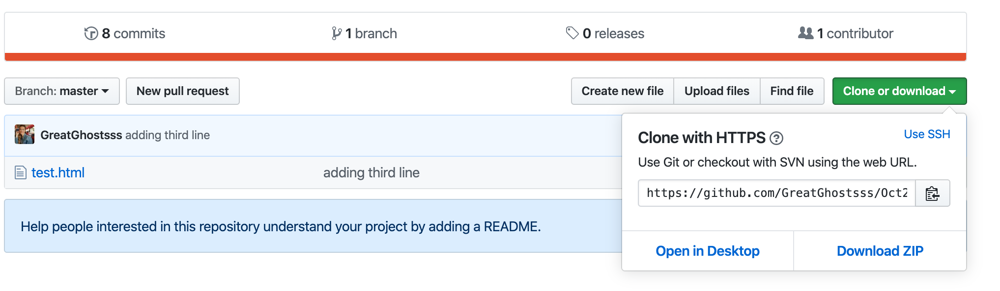

Let’s say you’re green, but not that green. Let’s say you want to learn more about GitHub, but can only find tutorials for either brand new users or advanced workflows for GitHub vets—nothing in between.
That's where this page comes in.
Stay with me for a minute.
I think about naming conventions more than most people. This is a getting started guide, though that naming convention is imperfect. In this case, I’m assuming you know some things about GitHub, so you’re not really starting much of anything; you’re progressing with what you have. On the other hand, these aren’t advanced concepts. So what’s between GitHub fundamentals and incredibly technical matters? We're not getting started. We're getting going.
Yes, we're getting going.
Here, you're going to learn three fundamental workflows for using Git on the command line interface.
Assumptions
- You're familiar with the GUI version of GitHub: GitHub Desktop
- You're on OSX.
- You can open Terminal or an alternative, like iTerm2.
- You have a repo with which you can experiment.
- You’re somewhat familiar with concepts that sound weirdly like throwing a frisbee with your dog: push, pull, fetch
Scenario One: Place the files hosted in your GitHub repository onto your local machine
We want to take an already-existing repository and place it on your local machine. The good news is that you'll only have to do this once.
- In your browser, open the repository you want to download.
- Click Clone or download.
- Open Terminal and paste the following, replacing my dummy URL with your project URL: 
$ git clone http://yourproject.com/coolRepo.gitThis command deposits a clone of your repository in the /Users/ directory on your Mac.
Scenario Two: Update local repository to match what's on the server
This scenario is relevant if you’ve made a change to one of your files in GitHub itself and want to ensure you’re working locally with the most recent copy. This is rare, but good to know how to do.
- In your browser, visit the Github repository.
- Click Clone or download.
- Copy the URL.
- In Terminal, pull from the repository using this command, replacing my sample URL with the URL copied in step three.
Scenario Three: Push changes to repository
You’ve made changes in your local environment and want to ensure your GitHub repo reflects them. This is the most common scenario.
For context about why we're doing what we're doing, we need to understand what the staging area is.
The staging area is a magical, liminal space where changes you've committed hang in the air, waiting for you to gently glide, er, push them into your repository.
After making changes to a file locally, we want to place that file in the staging area. We can do this with $git add [file], but this alternative is more comprehensive:
We can ensure the changes we've placed in the staging areas are recognized by GitHub using:
If the file name is green, GitHub has recognized the change and is ready for you to push to the remote repository.
- To push to the repository, we only need:
$ git pushGitHub can be a trip.
Thinking about merges and branches and how they impact your repository through time can be as opaque as a later season of LOST. But these basic workflows will you going. To learn more, check out GitHub's documentation.